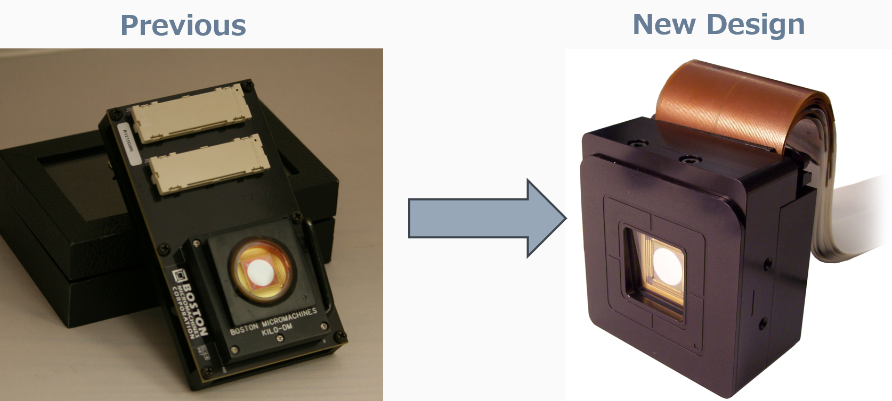

Overview
The Kilo product redesign was a strategic initiative to optimize our existing product line for manufacturing efficiency and cost competitiveness while maintaining the high precision and reliability that our customers depend on. This project required balancing aggressive cost targets with the need to preserve optical performance and system integration.
Problem Statement
Our original Kilo design, while technically excellent, faced several challenges in a competitive market. Manufacturing costs were higher than industry benchmarks, certain components had long lead times, and design complexity made assembly time-consuming and error-prone.

Approach & Methodology
I led a cross-functional team through a Design for Manufacturing (DFM) exercise, systematically evaluating every aspect of the design for opportunities to simplify production without compromising performance.
Key Design Considerations
- Manufacturability: Prioritized designs that could be efficiently produced using our current equipment and processes
- Part Count Reduction: Consolidated multiple components into integrated designs where feasible
- Optical Performance: Maintained tight tolerances and alignment requirements critical to system function
- Supply Chain: Shifted toward more readily available components with established vendor relationships
Design & Development
The redesign process involved extensive CAD modeling and Design for Manufacturing analysis. We identified opportunities in packaging geometry, fastening systems, and component integration.
Working closely with manufacturing, we prototyped key design changes and validated that they maintained all critical performance specifications before moving to production tooling. This iterative approach ensured manufacturability without performance compromises.
Technical Implementation
The key improvements included redesigning the optical bench mounting system to reduce machining operations, consolidating fastening strategies to use primarily one fastener type, and optimizing component placement to improve assembly efficiency by over 30%.
Major Design Changes
- Structural Design: Replaced multi-piece aluminum structure with integrated design reducing parts by 40%
- Optical Mount: Developed kinematic mount system reducing alignment time while maintaining specification
- Cabling: Redesigned internal routing and connector placement for faster assembly and fewer errors
Results & Outcomes
The redesigned Kilo exceeded all project targets, delivering significant cost savings and manufacturing efficiency improvements while maintaining the optical and mechanical performance that defines the product.
Key Achievements
- Cost Reduction: 22% reduction in manufacturing cost versus original design
- Assembly Time: 35% faster assembly process with fewer potential error points
- Part Count: 40% reduction in unique part numbers simplifying supply chain
- Lead Time: Improved material availability reduced overall production lead time by 3 weeks
- Yield: Assembly yield improved by 15% due to simplified manufacturing process
Learnings & Reflections
This project reinforced the value of truly cross-functional collaboration. By involving manufacturing, quality, and supply chain teams early in the design process, we avoided costly design iterations downstream. The systematic DFM approach ensured we questioned every design decision and didn't carry forward design choices from the original that weren't justified by performance requirements.
Perhaps most importantly, I learned that "elegant" design isn't always the best design. Sometimes a simpler, less aesthetically refined approach proves superior when manufacturing scale and consistency are primary consideration.
Future Work
With the Kilo redesign in production and performing well, the next opportunity lies in applying these learnings to other product lines. We've documented our DFM methodology and are using it as a template for future redesign efforts across our portfolio.
Next Initiatives
- Apply DFM methodology to second product line in portfolio
- Explore automation opportunities to further reduce assembly labor
- Develop component specifications for long-term supply security